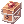
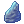
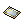
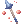
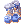

General Ideas in WoE
Last Updated till Patch #197
This page is to introduce general ideas and knowledge of War of Emperium(WoE), including some tips for beginners.
For rules and information, please visit War of Emperium and Draft War of Emperium.
You should also check this link for customizations in Siege Modes: Siege Alterations.
Introduction to WoE
4TH JOBS ARE ENABLED IN All SIEGE MODES NOW
The minimum entry level for all characters has been raised to 215.
Team Compositions
To carry out strategies (attacking or defending), guilds may have different team compositions but there are some jobs that are crucial in a party.
If you are a captain for Draft WoE, it is highly recommended to fulfill at least 2 well-supported parties like the following table, then fill up the rest of your guild.
In a regular WoE which has a 24 member capacity in a guild, usually the roster looks like this:
| Party 1 | Party 2 |
|---|---|
| Cardinal | Cardinal |
| Biolo | Biolo |
| Dragon Knight | Dragon Knight |
| FL Elemental Master | BL Elemental Master |
| Troubadour | Troubadour |
| Trouvere | Trouvere |
| Imperial Guard | Imperial Guard |
| DPS | DPS |
| GC | GC |
| Inquisitor EC | Others |
| Others | Others |
| Others | Others |
- For the "Others" indicated in the table, it is usually filled by inquisitors, Abyss Chasers, or just more GC.
Keep in mind this may change according to strategies and job availability within the guild, especially in Draft WoE where the numbers of every job are not perfectly fitting in every guild.
Player Community Based WoE System
As there are not enough guilds in the siege modes, some players decided to organize WoE for the whole community that communicates mainly in this Discord server: https://discord.gg/tb3BNYSEpx
Players are evenly distributed according to the job availabilities and having vocal shotcallers in every guild, veterans and new players are all welcomed.
For more details, please read the server introductions.
Basic Functions of Jobs
Note that only simple concepts of every jobs are listed, there are much more to do as players proceed to more advanced and competitive levels.
Jobs are divided into categories but they can also be played for different purposes.
For jobs not mentioned below are less popular in the current meta but most of them are still useful when played properly.
As 4th jobs are enabled in Siege Modes recently, some players may still refer to the 3rd jobs' names, below includes alternate calls of the jobs for easier understandings.
Supports
 Cardinals (AB or Cardi):
Cardinals (AB or Cardi):
- Provide buffs, mainly
 Sacrament,
Sacrament,  Clementia,
Clementia,  Canto Candidus, other skills if requested as well
Canto Candidus, other skills if requested as well - Remove debuffs on allies with
 Lauda Agnus,
Lauda Agnus,  Lauda Ramus ,
Lauda Ramus ,  Clearance,
Clearance,  Status Recovery etc.
Status Recovery etc. - Protect teammates from ranged attacks with
 Pneuma or melee attacks with
Pneuma or melee attacks with  Safety Wall
Safety Wall
- Provide buffs, mainly
- Biolos (Gene):
- Prevent gear breakage of teammates with
 Full Chemical Protection.
Full Chemical Protection. - Place
 Thorn Trap to prevent enemies from moving in or out from your guild
Thorn Trap to prevent enemies from moving in or out from your guild - Use
 Crazy Weed to remove some traps on your team or enemy Pneuma or Wall of Fog for attacking purpose
Crazy Weed to remove some traps on your team or enemy Pneuma or Wall of Fog for attacking purpose - Make use of different homunculus to achieve various purpose
- Place debuffs on enemies with
 Howling of Mandragora, Illusion Doping,
Howling of Mandragora, Illusion Doping,  Spore Explosion etc.
Spore Explosion etc.
- Prevent gear breakage of teammates with
 Troubadours (Mins or Bragi):
Troubadours (Mins or Bragi):
- Provide buffs(
 Poem of Bragi,
Poem of Bragi,  Echo Song, different Ensembles and Chorus with the help of a Trouvere in party)
Echo Song, different Ensembles and Chorus with the help of a Trouvere in party) - Place debuffs on enemies with
 Poem of the Netherworld(trap),
Poem of the Netherworld(trap),  Gloomy Day,
Gloomy Day,  Harmonize etc.
Harmonize etc.
- Can also act as DPS/GC with
 Metallic Sound,
Metallic Sound,  Reverberation,
Reverberation,  Severe Rainstorm
Severe Rainstorm
- Can also act as DPS/GC with
- Provide buffs(
 Trouveres (Wandy):
Trouveres (Wandy):
- Provide buffs((
 Service For You,
Service For You,  Swing Dance, different Ensembles and Chorus with the help of a Troubadours in party)
Swing Dance, different Ensembles and Chorus with the help of a Troubadours in party) - Place debuffs on enemies with Poem of the Netherworld(trap), Gloomy Day, Harmonizeetc.
- Useful as a solo performer in a party too because of the access of Poem of Bragi with
 Performer Soul Link
Performer Soul Link
- Can also act as DPS/GC with Metallic Sound, Reverberation, Severe Rainstorm
- Can also act as DPS/GC with
- Provide buffs((
 Dragon Knights (RK or DK):
Dragon Knights (RK or DK):
- Act as the frontline of the guild, absorbing damage and lead the attacking trend
- Dish out considerably strong damage with
 Dragon's Breath build or act as GC with physical builds(usually
Dragon's Breath build or act as GC with physical builds(usually  Ignition Break/Crush Strike)
Ignition Break/Crush Strike) - Provide buffs with various Runes, a.k.a. "Lux" which will be explained in detail below
- Can also act as GC with physical builds, usually Ignition Break or Crush Strike
- Can also act as GC with physical builds, usually
 Elemental Masters (Sorc or EM):
Elemental Masters (Sorc or EM):
- Place debuffs on enemies with
 Arrullo,
Arrullo,  Diamond Dust etc.
Diamond Dust etc. - Control enemy stacks with
 Vacuum Extreme,
Vacuum Extreme,  Spider Web,
Spider Web,  Land Protector etc.
Land Protector etc. - Provide buffs with
 Striking on your physical DPS and elemental endows on magical DPS if applicable
Striking on your physical DPS and elemental endows on magical DPS if applicable - Remove buffs and debuffs on ally or enemy with
 Dispel according to situations, most recognizable case would be dispelling an enemy Inquisitors who used Cursed Circle in your own stack to re-enable ally actions
Dispel according to situations, most recognizable case would be dispelling an enemy Inquisitors who used Cursed Circle in your own stack to re-enable ally actions - Frontline EMs usually get
 Devotion from IGs to help them with tanking, so they can stay longer for both attacking and defending
Devotion from IGs to help them with tanking, so they can stay longer for both attacking and defending - Backline EMs mainly precast behind the guild to prevent a sandwich from another guild, also taking more care of dispelling tasks
- Place debuffs on enemies with
 Imperial Guards (RG or IG):
Imperial Guards (RG or IG):
- Use Devotion on DPS to absorb damage for them
- Provide buffs with
 Piety,
Piety,  Providence, Guardian Shield etc.
Providence, Guardian Shield etc. - Removes negative land effects on stack with
 Trample or
Trample or  Earth Drive
Earth Drive
- Use
Utility
 Inquisitors (sura):
Inquisitors (sura):
- Can act as scouts and ecaller for the team because of their high mobility with Body Relocation
- Place debuffs on enemies with Cursed Circle etc.
- Can also act as DPS/GC with Gate of Hell/Tiger Cannon/Asura Strike
 Abyss Chasers (AC or SC):
Abyss Chasers (AC or SC):
- Can act as scouts for the team because of their high mobility with various skills
- Can also act as Ecaller, they have relatively short-ranged movement skills than Inquisitors, but they have hiding skills which Inquisitors do not have normally
- Place strong debuffs on enemies with the Masquerade skills, Raid, Shadow Form etc.
- Place land effects like Bloody Lust, Chaos Panic, Man Hole etc.
- With the skill Reproduce, you can copy Crazy Weed from Genetics, being able to clean up ground skills like Land Proctor, Pneuma, Wall of Fog, traps...
DPS
- Usually
 Arch Mages (AM or WL),
Arch Mages (AM or WL),  Wind Hawks (WH or Ranger),
Wind Hawks (WH or Ranger),  Dorams, Biolos (Gene),
Dorams, Biolos (Gene),  Meisters (Mech) or
Meisters (Mech) or  Soul Ascetics (Linker, SR or SA), for current meta
Soul Ascetics (Linker, SR or SA), for current meta
- Dish out very strong damage with the help of Devotion
- Mostly require minmaxed gears and MVP cards (if applicable)
Ground Control
- Usually
 Shadow Crosses (GX), Performers,
Shadow Crosses (GX), Performers,  Sky Emperors (SE) or
Sky Emperors (SE) or  Ninjas, for current meta
Ninjas, for current meta
- Kills enemy divers, such as CC Inquisitors or ACs
- Helps with controlling enemy ecallers especially in emp room
Guides made by Players
- Lilina's PvP Arch Bishop Guide
- G1's DPS/GC Related Gear Guide
- SpaceMomo's PvP Sorcerer Guide
- pq's Shadow Chaser Guide
- pq's Introduction to Sura
- Kagi's PvP Guide for Guillotine Cross
Maps of Castles
- Andlangr:
- Usual Defending Flag Zones: 1-1/1-2 > 4-2 > 4-1 > Emp Ledge
.png)
- Mardol:
- Usual Defending Flag Zones: 1-1/1-2 (> 3-1 > 4-1/4-2) > 6-2 > Emp Ledge
.html)
- Cyr (Out of rotation now because of low population in WoE1):
- Usual Defending Flag Zones: 1-1/1-2 > 5-1 (> 5-2/before 2nd Cades) > Emp Ledge
Preparation Before WoE Starts
There are several things to be checked before you participate in WoE:
Setting Up Restock Lists
- You have to know your consumables by their effective duration, such as 30 mins +10 foods, 10 mins consumables, one-time consumables, and prepare to re-spply when they run out
- You should also consider your weight limit and keep it as low as possible for masq resist, meanwhile having enough supplies until your next restock time
- Also check if you have the right type of supplies in restock list: Siege items work in regular WoE, Battleground items work in Draft WoE/BG/GvG Arena/PvP only
- Check and restock your supplies with "@restock(number) list" easily
Useful General Items/Consumables
 Gym Pass from Nova Point Shop
Gym Pass from Nova Point Shop
- Use 10 on each character for maximum weight capacity to reduce the chance of being Masquerade'd

- To get items from storages without warping back to a town, but @restock commands do not work in castle so it is recommended to clean the storages
 Fenrir Power Scroll from Geffen Magic Tournament instance
Fenrir Power Scroll from Geffen Magic Tournament instance

- Restores 5 SP every 10 seconds for 3 minutes.


 Gin Sacred Draught from Endeavor Token Shop
Gin Sacred Draught from Endeavor Token Shop


- Not necessary if Protective Balm is used
- Not necessary if Protective Balm is used
Below are some items with Siege or BG versions so you do not need to buy or farm the real versions
- You can get them via NPC Telma in @go bg with Valor Badges

- Main HP recovery item, can be used without any cooldown

- Main SP recovery item, can be used without any cooldown
 Box of Sunlight
- To detect both allies and enemies that are in hiding status
Elemental Proof Potions
- You can use all of them, but more recommended to use the suitable ones according to your armor element and elemental resist%, against the elemental attacks that your enemies are using
Eye Cleaner cures Pitch Darkness
Ear Cleaner cures Quiet
Tonic cures Lethargy
Compressed Fire Extinguisher cures Blaze
Lucky Water cures Unlucky
Strong Antidote cures Severe Poison
High Calorie Chocolate cures Gloom
Refined Holy Water cures Holy Fire


Setting Up Keys
- Press Esc and select "BM/Shortcut Settings" in game to manage your shortcut keys
- Use alt+m in game to change your shortcut list
- Generally you will need "@guildskill WF" as a member of any guild to help regrouping
- @restock and @refresh are often used during WoE time as well
- You may set macros for buffs or clearance and dispel if you are not available to use voice chat, it would help your supports to know what you need in the exact moments
- SC and Mechanic players can use /bingbing and /bangbang in macros to help adjusting directions of movement skills, but it is up to player preference
Useful Commands
@showbuff
@hold [0,1,2,3]
@restock(number)
@spam
/effect
/circle
@refresh
@runecd (Shows the cooldown of Algiz Runestone, but only RK can use this command)
@gcd (Shows the cooldown of all guild skills)
@gs ec (Used by the Guild Leader to warp all guild members to their position, cast can be cancelled by the user with opening a chatroom)
@gs pf (Places a temporary flag anywhere before the 3rd cades in the castle)
@gs wf (Warps your character from anywhere to the location of a temporary flag that is placed in the castle)
Adjusting NovaExt according to Needs
- There are effects of land skills and status timers in NovaExt which is really helpful for different purposes
- For DPS, you may want to turn on timer for "Devotion" or even "Defender" to have better estimation of your movement
- Cardinals may need better contrast on pneuma and LP or other land effect, so you can protect your teammates from ranged damage
- Turbo and Smartcast are great for skill spamming classes or potion usage
Confirming Strategies
- Remind and make sure your guild leader has passed leadership to Ecaller in game so the assigned person can use the guild skills
- WoE castle rotates every month, check it so you would not defend or attack a wrong castle
- RGs (Devo builds) should ask for their devotion targets
- Performers should ask what songs, namely the chorus and ensemble songs, the party needs
- ABs should ask what buffs do the DPSs need, some may not need Odin's Power and Expiatio
Obtaining Basic Items and Resist Gears
- Check NPC Telma in @go bg so you can use siege or battleground items instead of using real and potentially more expensive consumables
- Gain Valor Badges through daily log in reward on certain days in the calendar or by participating in the Battlegrounds, and buy WoE Plate/Suits/Robe Sets and items at BG Shops
- You can get a free Recruit Set from NPC Rune Knight Manuel in @go bg, which provides less resistance than WoE Sets or other minmaxing builds
- Buy refined and enchanted gears from vendors and players, some WoE potion boxes can be bought in the Eden Market
Enchanting WoE Sets
WoE Armors can be enchanted with Glorious Spirit and WoE Garments and Shoes can be enchanted with Valorous Spirit respectively
- Glorious Spirit costs 600 Valor Badges and Valorous Spirit costs 500 Valor Badges, sold by NPC Siege Supplier at @go bg.
- Also obtainable by chance from Valorous Cache (sold by NPC Sketchy Dealer at @go bg, costs 200 Valor Badges).
- The spirit items are tradeable so you can buy them from vendors and players.
There is chance of adding a single-enchant re-roll system for these enchants in the future. (mentioned in the Patch Notes )
Armor ( WoE Plate [1]/ WoE Plate [1]/ WoE Suits [1]/ WoE Suits [1]/ WoE Robe [1]) Enchants WoE Robe [1]) Enchants
| |||
|---|---|---|---|
| First Enchant | Min~Max | Second Enchant | Min~Max |
| STR | 1~5 | STR | 1~5 |
| AGI | 1~5 | AGI | 1~5 |
| VIT | 1~5 | VIT | 1~5 |
| INT | 1~5 | INT | 1~5 |
| DEX | 1~5 | DEX | 1~5 |
| LUK | 1~5 | LUK | 1~5 |
| All Stats | 1~3 | All Stats | 1~3 |
| MaxHP | 1000~2000 | Water Armor Element | |
| MaxSP | 50~150 | Fire Armor Element | |
| MaxHP | 1%~3% | Earth Armor Element | |
| MaxSP | 1%~3% | Wind Armor Element | |
| DEF | 10~50 | DEF | 10~50 |
| MDEF | 1~5 | MDEF | 1~5 |
| Reduce SP consumption | 1%~10% | Reduce SP consumption | 1%~5% |
| HP recovery | 1%~5% | HP recovery | 1%~5% |
| SP recovery | 1%~5% | SP recovery | 1%~5% |
| Item heal effectiveness | 1%~10% | ||
| Increase Neutral element enemy resistance | 1%~5% | ||
| Increase Holy element enemy resistance | 1%~10% | ||
| Increase Ghost element enemy resistance | 1%~10% | ||
| Increase Medium sized enemy resistance | 1%~3% | ||
| Increase all element resistance except Neutral | 1%~3% | ||
Garments ( WoE Manteau [1]/ WoE Manteau [1]/ WoE Muffler [1]) and Shoes ( WoE Muffler [1]) and Shoes ( WoE Greaves [1]/ WoE Greaves [1]/ WoE Boots [1]/ WoE Boots [1]/ WoE Shoes [1]) Enchants WoE Shoes [1]) Enchants
| |||
|---|---|---|---|
| First Enchant | Min~Max | Second Enchant | Min~Max |
| MaxHP | 200~500 | MDEF | 1~5 |
| MaxSP | 25~50 | Item heal effectiveness | 1%~5% |
| MaxHP | 1%~2% | Increase Medium sized enemy resistance | 1% |
| MaxSP | 1%~2% | Increase all element resistance except Neutral | 1% |
| DEF | 10~25 | DEF | 10~25 |
| Reduce SP consumption | 1%~5% | Reduce SP consumption | 1%~5% |
| HP recovery | 1%~5% | HP recovery | 1%~5% |
| SP recovery | 1%~5% | SP recovery | 1%~5% |
| STR | 1~3 | ||
| AGI | 1~3 | ||
| VIT | 1~3 | ||
| INT | 1~3 | ||
| DEX | 1~3 | ||
| LUK | 1~3 | ||
Enchanting Warlord's Set
Warlord's Mails can be enchanted with Warlord's Bravery and Warlord's Manteaus can be enchanted with
Warlord's Valor respectively
- Warlord's Bravery and Warlord's Valor each costs 400 Siege Tokens, sold by NPC Siege Merchant at @go woe.
- The enchanting items are tradeable so you can buy them from vendors and players.
Armor ( Warlord's Mail [1]) Enchants Warlord's Mail [1]) Enchants
| |||
|---|---|---|---|
| First Enchant | Min~Max | Second Enchant | Min~Max |
| STR | 1~5 | STR | 1~5 |
| AGI | 1~5 | AGI | 1~5 |
| VIT | 1~5 | VIT | 1~5 |
| INT | 1~5 | INT | 1~5 |
| DEX | 1~5 | DEX | 1~5 |
| LUK | 1~5 | LUK | 1~5 |
| All Stats | 1~3 | All Stats | 1~3 |
| MaxHP | 1000~2000 | Water Armor Element | |
| MaxSP | 50~150 | Fire Armor Element | |
| MaxHP | 1%~3% | Earth Armor Element | |
| MaxSP | 1%~3% | Wind Armor Element | |
| DEF | 10~50 | DEF | 10~50 |
| MDEF | 1~5 | MDEF | 1~5 |
| Reduce SP consumption | 1%~10% | Reduce SP consumption | 1%~5% |
| HP recovery | 1%~5% | HP recovery | 1%~5% |
| SP recovery | 1%~5% | SP recovery | 1%~5% |
| Item heal effectiveness | 1%~10% | ||
| Increase Neutral element enemy resistance | 1%~5% | ||
| Increase Holy element enemy resistance | 1%~10% | ||
| Increase Ghost element enemy resistance | 1%~10% | ||
| Increase Medium sized enemy resistance | 1%~3% | ||
| Increase all element resistance except Neutral | 1%~3% | ||
Garments ( Warlord's Manteau [1]) Enchants Warlord's Manteau [1]) Enchants
| |||
|---|---|---|---|
| First Enchant | Min~Max | Second Enchant | Min~Max |
| MaxHP | 200~500 | MDEF | 1~5 |
| MaxSP | 25~50 | Item heal effectiveness | 1%~5% |
| MaxHP | 1%~2% | Increase Medium sized enemy resistance | 1% |
| MaxSP | 1%~2% | Increase all element resistance except Neutral | 1% |
| DEF | 10~25 | DEF | 10~25 |
| Reduce SP consumption | 1%~5% | Reduce SP consumption | 1%~5% |
| HP recovery | 1%~5% | HP recovery | 1%~5% |
| SP recovery | 1%~5% | SP recovery | 1%~5% |
| STR | 1~3 | ||
| AGI | 1~3 | ||
| VIT | 1~3 | ||
| INT | 1~3 | ||
| DEX | 1~3 | ||
| LUK | 1~3 | ||
Progression of Headgears (for Demihuman Resist):
- Top
Warlord's Helm [1] (obtained from Siege Supplier in BG (@go bg, right side) for 10,000 Valor Badges)
or
 Feather Beret (obtained from Headgear Quest)
Feather Beret (obtained from Headgear Quest) Black Feather Beret (obtained from Siege Merchant)
Black Feather Beret (obtained from Siege Merchant) Cat Ear Beret [1] or
Cat Ear Beret [1] or  Red Pom Band [1] (obtained from Siege Merchant)
Red Pom Band [1] (obtained from Siege Merchant) Defensive Cat Ear Beret [1] or
Defensive Cat Ear Beret [1] or  Defensive Red Pom Band [1] (obtained from Limes)
Defensive Red Pom Band [1] (obtained from Limes)
- Mid
 Blush of Groom (obtained from Nova Shop)
Blush of Groom (obtained from Nova Shop) Challenger's Blindfold (obtained from General Sotaro)
Challenger's Blindfold (obtained from General Sotaro)
- Lower
 Gentleman's Pipe (obtained from Nova Shop)
Gentleman's Pipe (obtained from Nova Shop) Handkerchief in Mouth (obtained from General Sotaro)
Handkerchief in Mouth (obtained from General Sotaro)
- Other Useful Headgear Options
 Thanatos's Odium Mask [1]
Thanatos's Odium Mask [1]
Useful Shadow Gears
- Not all Shadow Gears are enabled in Siege Modes, please read Siege Alterations and in game item descriptions carefully when you prepare your characters for WoE
General defensive purpose:


Hiding Shadow Set (any piece as you see suitable in your build)
Useful Costume Stones


 Fitness Lapis [M]


About MVP Card Usage
- MVP cards are tiered in Siege modes and the numbers of tiers you can use within each guild are different, please refer to Siege Alterations
- You should always ask your guild leader if you can use a certain MVP, you may block other guildmates from entering the castle when you carry excess amount of MVP cards in your inventories
- To give new comers easier access to all jobs in WoE, MVP Gear Rental Boxes are introduced
- MVP Gear Rental Boxes can be obtained via NPC Sketchy Dealer on the right side of @go bg
- From
 Tier 1 Rental Box (costs 2000 Valor Badges)
Tier 1 Rental Box (costs 2000 Valor Badges) Rental Penetration Aiming Bow
Rental Purified Shield of Deaf [WL/Mech]
Rental High Risk Warlord's Mail
Rental High Risk Vit Soutane
- Rental Arrogant Automatic Leg B-Type
- From
 Tier 2 Rental Box (costs 1000 Valor Badges)
Tier 2 Rental Box (costs 1000 Valor Badges) Rental Power Ward Defensive Cat Ear Beret
 Rental Power Ward Illusion Goibne's Helm
Rental Power Ward Illusion Goibne's Helm
Understanding Vocabularies and Calls
Shotcallers usually give instructions using Discord Voice Channels, you should always go into one and listen to them to help carrying out strategies during WoE Followings are some vocabularies and captain commands used widely in GvG environment.
"Emp"
- Short form of Emperium, which is a main objective for WoE
- The room after 3rd cades, where the emp is, is referred as emp room
"Lux"
- Calling for RKs to use Algiz the Runestone, instead of Lux Anima
- It is very important for RKs to use the Runestone at the right time, so more of your teammates can gather and get the buff
- Algiz was made after the implementation of KRO RK rework and it is a custom feature in NovaRO. Algiz has the same effect of sharing certain rune buffs as the old Lux Anima, so veterans often refer to this "sharing runes" action to "Lux" instead of "Algiz"
"Go X-Y"
- Calling for teammates to use the flag features in castle when the guild is defending
- Flag numbers are always used by veterans to refer to locations in a castle for regrouping, it gets easier to memorize them when you play more WoEs or BGs(conquest mode) or some GRFs provide the information on the map
- Defending guild members can warp into the emp room by using the flags at castle entrance and also inside the castle around every structure
- When Shotcallers say certain numbers when defending, for example "Go 6-1", it refers to flag number 6 in emperium room, 1st option in the flag npc dialogue.
"Use the flag"
- Calling for teammates to use the commands for regrouping during attacks
- When Shotcallers give command to Ecallers to "put down a flag", the ecallers will use "@guildskill pf" to put a small flag at a place which provides a warp option for other guild members to use "@guildskill wf" to reach the flag position no matter where they are currently
- The flag requires at least 12 guild members to be around it to allow "@guildskill wf" usage. Both "@guildskill pf" and "@guildskill wf" commands are set on a short cooldown once a player dies
"Ecalling"
- Calling for preparation of Emergency Call (the most important and impactful guild skill)
- Usually done by Ecallers instead of Shotcallers, when you hear this, you have to be ready for encountering enemies or rush to a structure after warping into certain location of the castle, you may also want to buff up before warping if possible
- As an Ecaller, you may want to give specific information of your location when casting Ecall, so Shotcallers can give commands easier
- Ecall cast gets interrupted with any kind of attack, you may help the guild to stop an enemy Ecallers as any job
"Bwing out"
- Calling for teammates to retreat with items,
 Butterfly Wing or
Butterfly Wing or  Poison Bottle
Poison Bottle - You should prepare some butterfly wings or poison bottles for tactical retreat purpose since other warping-to-save-point commands do not work within the whole castle
Advanced Tips
As you progress in WoE, you may encounter more situations that the above mentioned needs improvement.
These preparations are not necessarily done by everyone but can be very helpful when used in critical events.
Main Objectives
WoE is a GvG event, but there are structures to destroy in order to conquer the castle.
Note that all structures are repaired automatically after every Emperium break in WoE 1 and 2, but only 3rd Cades are repaired automatically in Draft WoE.
Stones
There are 1st Stone and 2nd Stone in different positions before the 1st Cades, you can only damage the 1st Cades after both Stones are killed.
Some Shotcallers may prefer SXs or Inquisitors with DPS swaps to kill the other Stone when the main part of the guild goes to the Stone where the defending guild is at.
Vice versa, the defending guild may want some people to protect the other Stone too.
If you are on those jobs, it is probably a good idea to confirm with your guild leader before the WoE starts.
Cades
A total of three sets of Cades are located along the way to Emperium in the castle, the sequence from Entrance to Emp room is 1st Cades, then 2nd Cades, lastly 3rd Cades.
Not all positions before Cades are good for defending, here are some usual positions the defending guild may stay on:
- 4-2 before 2nd Cades and 4-1 before 3rd Cades in Andlangr
- 6-1 before 3rd Cades in Mardol
Emperium
The Emperium is the main objective in a WoE, the guild can only conquer a castle by taking the last hit of the Emp.
It can be attacked by both melee and ranged auto attacks, but not attacking skills.
Note that Double Attack (from Thief Classes or from items) works on Emp but not Triple Attack (from Sura).
The Emp is a holy element plant monster so it is possible to avoid enemies from attacking Emp by using Aspersio on them. If you got Aspersio by an enemy when you are hitting Emp, you can use an elemental converter or swap your weapons to undo the holy enchantment.
Safety Wall and Pneuma can also prevent damage on the emp, but they will block allied attacks too, so use them wisely.
Enemy Guilds
When there are more than two guilds in a WoE, although guilds cannot form alliance, they can work together especially when attacking structures.
Remember not to kill recklessly, listen to the Shotcallers and do it on the right timing.
It is usually recommended to focus on enemy DPSs or FL Sorc in GvG, so your guild can stay alive and push through the defending spots easier.
When you are defending a structure, do not overextend too much since your first target is to protect the structures. It can be dangerous if there is another attacking guild behind the current enemies you are killing.
On the other hand, attackers are sometimes suggested to ignore the defenders and go straight to destroy the structures. Keep in mind that you can only move on till the Emp Room once the structure is down but not killing the defenders who keep coming back from their flags.
Roles in a Guild Voice Chat
It is not a must for everyone to speak in a Voice Chat, captains and people with specific roles in the guild will be the main speakers.
You can have a brief understanding of what they do and help along. Remember cooperation is always the main way towards victory!
Shotcaller
- Giving instructions to guildmates
- They are often the leader in the guild or the captain in a Draft WoE, having broad knowledge of game mechanics and jobs
- Not bounded by jobs they play
- It is advised to listen to their commands on priority than other people
Scouts
- Giving information about other guilds in the castle
- Often done by Inquisitors or ACs because of their high mobility, but not limited to these jobs
- When defending, they warn the guild before attacking guilds come close, also announce the pass-through of enemy Ecallers for the GC players to follow up if possible
- When attacking, information from the entrance to target structure is very important, as the guild would not want to spend time fighting other attacking guilds to concentrate on killing the defending guild and take down certain structure
- Bonus point if you can analyze the flow of a GvG (attacking guild is winning or not, where and what enemy guilds are targetting), so the Shotcaller can make better decisions accordingly
Ground Control
- Announce after killing enemy Ecallers
- Mainly done when defending so people can focus on GvG with incoming guilds instead of chasing and checking the back
- You can check the Ecaller character names of current castle owner at the flag in front of castle when attacking (the same one as u warp into castle when defending)
Swapping Gears and Cards
There are many different builds that can do massive damage if you are not prepared for them.
Abnormal status are often deadly if they are not removed on time. There are supporting jobs to clear them but some can be cured by specific skills enabled by gears or cards.
This section contains various options of gears and cards as defensive swaps, not all of them would be used 100% in a WoE but it gives advantages to counter enemy DPSs.
Items with Specific Functions
| Gears | ||
|---|---|---|
| Name | Slot | Effect |
| Salvage Cape | Garment | For AB and WL only
Level 1 Cicada Skin Shed |
 Manteau of Airship Manteau of Airship
|
Garment | 0 weight garment
Good as a swap with Bio 4 Randel Card |
| Kvasir's Ring [1] | Accessory | Blessing of Yggdrasil:
Cure many status such as Crystallization, Burning, Freezing |
| Cards | ||
|---|---|---|
| Name | Slot | Effect |
 Bio 4 Randel Card Bio 4 Randel Card
|
Garment | Level 3 Auto Guard |
 Iara Card Iara Card
|
Accessory | Status Recovery:
Cure Poem of Netherworld Snare status, also Stasis |
 Smokie Card Smokie Card
|
Accessory | Level 1 Hiding |
 Horong Card Horong Card
|
Accessory | Level 1 Sight
Reveal hiding targets and shadow form in range |
Elemental Cards
It is recommended to choose your armor element and elemental resist cards carefully according to what your enemies are using.
Here are some choices you can work on to prepare your swaps:
| Fire Resist Cards | ||
|---|---|---|
| Name | Slot | Effect |
 Leib Olmai Card Leib Olmai Card
|
Headgear | 10% Fire Damage Resist |
 Pasana Card Pasana Card
|
Armor | Change armor element to Fire |
 Jakk Card Jakk Card
|
Garment | 30% Fire Damage Resist |
| Water Resist Cards | ||
|---|---|---|
| Name | Slot | Effect |
 Leaf Cat Card Leaf Cat Card
|
Headgear | 10% Water Damage Resist |
 Swordfish Card Swordfish Card
|
Armor | Change armor element to Water |
 Pot Dofle Card Pot Dofle Card
|
Armor | Change armor element to Water |
 Marse Card Marse Card
|
Garment | 30% Water Damage Resist |
| Wind Resist Cards | ||
|---|---|---|
| Name | Slot | Effect |
 Giant Hornet Card Giant Hornet Card
|
Headgear | 10% Wind Damage Resist |
 Dokebi Card Dokebi Card
|
Armor | Change armor element to Wind |
 Dustiness Card Dustiness Card
|
Garment | 30% Wind Damage Resist |
| Earth Resist Cards | ||
|---|---|---|
| Name | Slot | Effect |
 Giearth Card Giearth Card
|
Headgear | 15% Earth Damage Resist |
 Sandman Card Sandman Card
|
Armor | Change armor element to Earth |
 Hode Card Hode Card
|
Garment | 30% Earth Damage Resist |
| Neutral Resist Cards | ||
|---|---|---|
| Name | Slot | Effect |
|  Barricade Card | Headgear | 10% Neutral Damage Resist
(you can only use one on your headgear, the second one would be nullified) |
 Ghostring Card Ghostring Card
|
Armor | Change armor element to Ghost |
 Noxious Card Noxious Card
|
Garment | 10% Neutral Damage Resist
10% Ranged Damage Resist |
 Raydric Card Raydric Card
|
Garment | 20% Neutral Damage Resist |
| Holy Resist Cards | ||
|---|---|---|
| Name | Slot | Effect |
 Angeling Card Angeling Card
|
Armor | Change armor element to Holy |
 Greater Dried Rafflesia Card Greater Dried Rafflesia Card
|
Garment | 30% Holy Damage Resist |
| Shadow Resist Cards | ||
|---|---|---|
| Name | Slot | Effect |
 Permeter Card Permeter Card
|
Headgear | 15% Shadow Damage Resist |
 Bathory Card Bathory Card
|
Armor | Change armor element to Shadow |
 Isis Card Isis Card
|
Garment | 30% Shadow Damage Resist |
| Poison Resist Cards | ||
|---|---|---|
| Name | Slot | Effect |
 Argiope Card Argiope Card
|
Armor | Change armor element to Poison |
 Myst Card Myst Card
|
Garment | 30% Poison Damage Resist |
| Other Less Common Elements Resist Cards | ||
|---|---|---|
| Name | Slot | Effect |
 Evil Druid Card Evil Druid Card
|
Armor | Change armor element to Undead
Usually used for unfrozen effect |
 Marionette Card Marionette Card
|
Garment | 30% Ghost Damage Resist |
 Prison Breaker Card Prison Breaker Card
|
Garment | 30% Earth, Wind, Shadow, Poison Damage Resist
Increase Damage taken from Fire, Holy, Ghost by 100% |
 Chaotic Stem Worm Card Chaotic Stem Worm Card
|
Garment | 20% Earth Damage Resist
10% Neutral Damage Resist |
 MVP Dark Guardian Kades Card MVP Dark Guardian Kades Card
|
Garment | 50% Fire, Water, Wind, Earth, Shadow Damage Resist
Increase Damage taken from Holy, Ghost by 100% |
Examples of Specific Resist Sets
DemiHuman Reduction
WoE Set
These are the standard gears for fully resisting the majority of players in siege scenario. Most classes should always have a full reduction set available, even traditionally frail classes such as Warlock. Having a full reduction set on swap can let you resist against far more attacks and either escape or counterattack.
Note that for the armor, you should try to get a +6 refinement level for the extra bonuses. +9 is nice to have, but by no means mandatory when just starting a class.
| Gears | ||||
|---|---|---|---|---|
| Items | Types | Classes | Acquisition | Effects |
| Defensive Cat Ear Beret [1]
|
Top Headgear | All | MDEF +1
For each refine +6 or higher (capped at +9):
| |
| Defensive Red Pom Band [1]
|
All | MDEF +1
For each refine +6 or higher (capped at +9):
| ||
| Challenger's Blindfold
|
Middle Headgear | All |
General Sotaro in @go woe |
Reduce damage from Demi-humans by 7%
STA +2, WIS +2 |
| Handkerchief In Mouth
|
Lower Headgear | All |
General Sotaro in @go woe |
Reduces damage received from demi-human race enemies by 3%
STA +2, WIS +2 |
| WoE Plate [1]
|
Armor | Swordsman Class / Merchant Class / TaeKwon Kid / Star Gladiator |
Battlegrounds ( |
*Stats during WoE & PVP
MDEF +5, STA +5, WIS +3
|
| WoE Suits [1]
|
Swordsman Class / Merchant Class / Thief Class / Archer Class / TaeKwon Kid / Star Gladiator / Gunslinger Class / Ninja Class | *Stats during WoE & PVP
MDEF +10, +4 STA, +4 WIS.
| ||
| WoE Robe [1]
|
Novice Class / Mage Class / Acolyte Class / Soul Linker | *Stats during WoE & PVP
MDEF +20, STA +3, WIS +5
| ||
 Combat Knife Combat Knife
|
Weapon | Novice Class / Swordsman Class / Merchant Class / Thief Class / Mage Class / Archer Class / Soul Linker / Ninja Class |
Increases physical damage on demi-human race targets by 10%
| |
|  Illusion Long Mace [2] | Acolyte Class | Illusion of Moonlight |
Range +3
| |
 Purified Knight's Shield [1] Purified Knight's Shield [1]
|
Shield | All | Increases attack speed (reduces delay after attack by 10%)
Atk + 5%, Matk + 5%
| |
 Thara Frog Card Thara Frog Card
|
Shield Card | All |
Reduces damage received from demi-human race enemies by 30%. | |
| WoE Manteau [1]
|
Garment | Any except Novice |
Battlegrounds ( |
*Stats during WoE & PVP
MDEF +1
|
| WoE Muffler [1]
|
All | *Stats during WoE & PVP
MDEF +10
| ||
| WoE Greave [1]
|
Shoes | Swordsman Class / Merchant Class / Taekwon Kid / Star Gladiator |
Battlegrounds ( |
*Stats during WoE & PVP
MDEF +1
|
| WoE Boots [1]
|
Swordsman Class / Merchant Class / Thief Class / Archer Class / Taekwon Kid / Star Gladiator / Gunslinger Class / Ninja Class | *Stats during WoE & PVP
MDEF +5
| ||
| WoE Shoes [1]
|
Novice Class / Mage Class / Acolyte Class / Soul Linker | *Stats during WoE & PVP
MDEF +10
| ||
 Physical Enhancer Ring [1] Physical Enhancer Ring [1]
|
Accessory | All |
ATK +5%
| |
 Magic Intensifier Ring [1] Magic Intensifier Ring [1]
|
All |
MATK +5%
| ||
 Sea Otter Mini Fan [1] Sea Otter Mini Fan [1]
|
All |
All Stats +1
| ||
 Automatic Booster R [1] Automatic Booster R [1]
|
All |
Atk + 5%, MaxHP + 5%
| ||
 King Schmidt's Rigid Insignia [1] King Schmidt's Rigid Insignia [1]
|
All |
MaxHP + 10%
| ||
 Cranial Shadow Shield Cranial Shadow Shield
|
Shadow Shield | All |
Reduces damage taken from demi-human enemies by 1%
| |
| All Race Shadow Shield | All | Reduces damage taken from all monster races by 1%
| ||
| Warlord's Shadow Shield | All |
Siege Merchant in @go woe |
Reduces damage taken from demi-human enemies by 1%
Refine Level +7:
| |


Warlord Set
This set of gears provides less Demihuman Reduction in total but more utilities such as After Cast Delay Reduction, Fixed Cast Time Reduction and Max HP etc.
WORK IN PROGRESS
100% Neutral Resist
All auto attacks without elemental endow or converters from enemy players can miss if you use this build.
It is situationally good for Ecallers when people try to stop your ecall casting with auto attacks.
You should adjust your gears according to the refine rates.
| Gears | ||||
|---|---|---|---|---|
| Items | Types | Classes | Acquisition | Effects |
 Guard's Cap [1] Guard's Cap [1]
|
Top Headgear | All | Increases resistance to Neutral attacks by 5%
Increases resistance to Ranged attacks by 5%
| |
| Barricade Card | Headgear Card | All | Reduces damage received from the Neutral element by 10%
Wearing two of this card at the same time will nullify the effect | |
 3D Glasses 3D Glasses
|
Middle Headgear | All | Increase neutral property resistance by 5% | |
| Purified Knight's Shield [1]
|
Shield | All | Cursed Knight's Shield | Increases attack speed (reduces delay after attack by 10%)
Atk + 5%, Matk + 5%
|
 Immune Shield [1] Immune Shield [1]
|
All | If upgraded to +5 or higher, increases 1% of tolerance against Neutral attack per refine level, limited to refine level 12
If upgraded to +7 increased tolerance against Neutral by 5% If upgraded to +9 or higher increases tolerance to Water, Earth, Fire, and Wind by 5% | ||
| Manteau of Airship [1]
|
Garment | All | Airship Assault | Increases resistance against Neutral element attacks by 10%
Flee +20, Reduction in variable cast by 20% |
 Heroic Backpack [1] Heroic Backpack [1]
|
All | Gold Coins | If refined to +9 or higher and base stats (without modifiers) is equal to 90 or higher,
-VIT -> Reduces damage taken from Neutral property attacks by a total of 10% | |
 Fallen Warrior Manteau [1] Fallen Warrior Manteau [1]
|
All | Gold Coins | If refined to +10 or higher and base stats (without modifiers) is equal to 90 or higher,
-VIT -> Reduces damage taken from Neutral property attacks by a total of 10% | |
| Raydric Card
|
Garment Card | All | Raydric | Increase resistance to Neutral property attacks by 20% |
 Noxious Card Noxious Card
|
All | Noxious | Adds 10% resistance against long ranged attacks
Increase resistance to Neutral property attacks by 10% | |
| Chaotic Stem Worm Card
|
All | Chaotic Stem Worm | Reduces damage taken from earth property damage by 20%
Reduces damage taken from neutral property damage by 10% | |
|  Angel Poring Boots | Shoes | All | Gold Coins | All stats + 1
With |


Note that  Jitterbug Card and
Jitterbug Card and  Tatacho Card does not stack with these items because reducing damage from Neutral property enemies is a different modifier.
Tatacho Card does not stack with these items because reducing damage from Neutral property enemies is a different modifier.
100% Ranged Resist
100% Range Resist is easier to be achieved by Acolytes since they have access to Illusion Long Mace.
You should adjust your gears according to the refine levels.
| Gears | ||||
|---|---|---|---|---|
| Items | Types | Classes | Acquisition | Effects |
| Guard's Cap [1]
|
Top Headgear | All | Increases resistance to Neutral attacks by 5%
Increases resistance to Ranged attacks by 5%
| |
| WoE Robe [1]
|
Armor | Novice/Mage/Acolyte/Soul Linker | MDEF +20
Reduces damage taken from enemy players by 2%
| |
| WoE Suits [1]
|
Swordman/Merchant/Thief/Archer/Taekwon/Taekwon Master/Ninja | MDEF +10
Reduces damage taken from enemy players by 2%
| ||
| Illusion Long Mace [2] | Weapon | Acolyte class | Illusion of Moonlight |
Range +3
|
 Furious Gazeti Card Furious Gazeti Card
|
Armor Card | All | Furious Gazeti | Reduce damage taken from long ranged physical attack by 20% |
 Toxious Card Toxious Card
|
All | Toxious | MaxHP + 10%, reduces damage taken from long ranged physical damage by 5%
[+ Noxious Card] Additional MaxHP + 5%, reduces damage taken from long ranged physical damage by additional 10% | |
| Noxious Card
|
Garment Card | All | Noxious | Adds 10% resistance against long ranged attacks
Reduces Neutral property damage by 10% |
| Horn Card
|
Shield Card | All | Horn | Reduce damage from long ranged attacks by 35% |
 Alligator Card Alligator Card
|
Accessory Card | All | Alligator | Reduce damage from long ranged physical attacks by 10% |
This build are sometimes used by ABs so they can stay safe from both ranged and melee physical damage with Safety Wall.
It can be used with  MVP Golden Thiefbug Card to avoid magical damage too.
MVP Golden Thiefbug Card to avoid magical damage too.
GRF
WORK IN PROGRESS
- Main Files to Modify
- Skill effects
- Cell textures
- Emp, cades, stones and flags sprite
- Minor Files to Modify
- Maps other than siege maps
- Loading screens
- Sound effects from skills
- Hiding costumes from players
- State icons
- Files that you should NEVER modify
- Player sprites
Aste GRF Discord Server: https://discord.gg/S6JjKW7Rpn
Alternate Clients
It is legal and very common for players to use alternate clients for various buffs.
Here are some examples of useful alts to use during WoE:
- Biolos:
- Full Chemical Protection to prevent gear breakages.
- Soul Ascetics:
 Golem Soul provides +40 Mdef for 300 sec, the def bonus part is disabled in siege settings.
Golem Soul provides +40 Mdef for 300 sec, the def bonus part is disabled in siege settings.